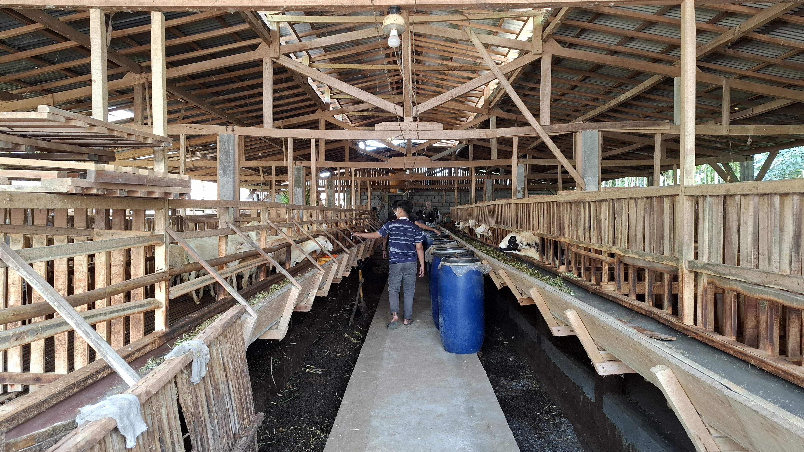
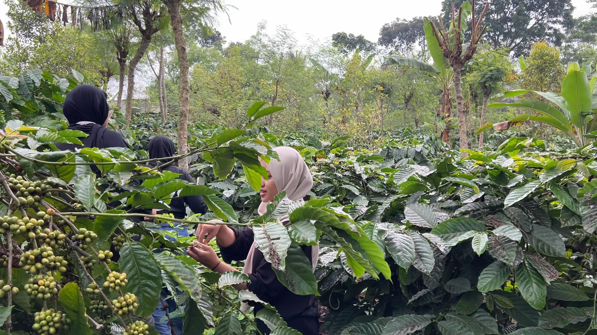
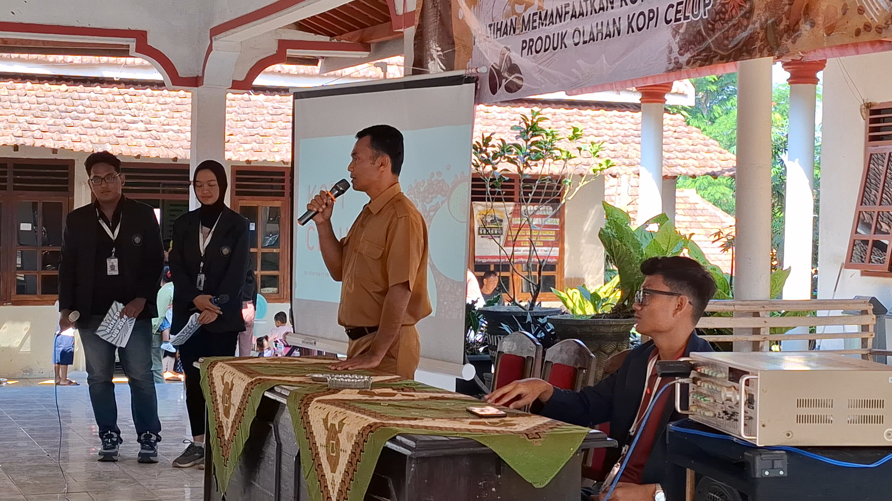
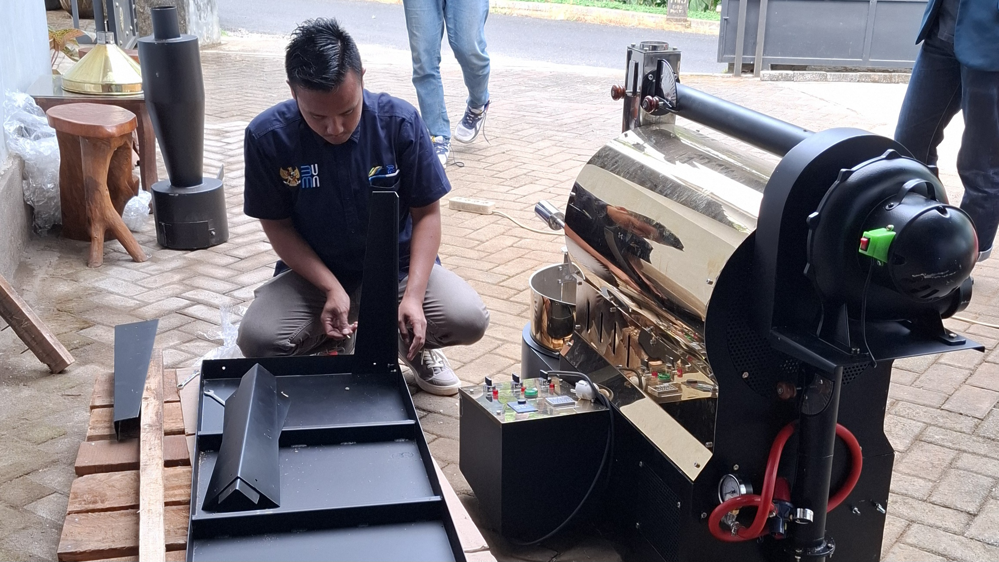
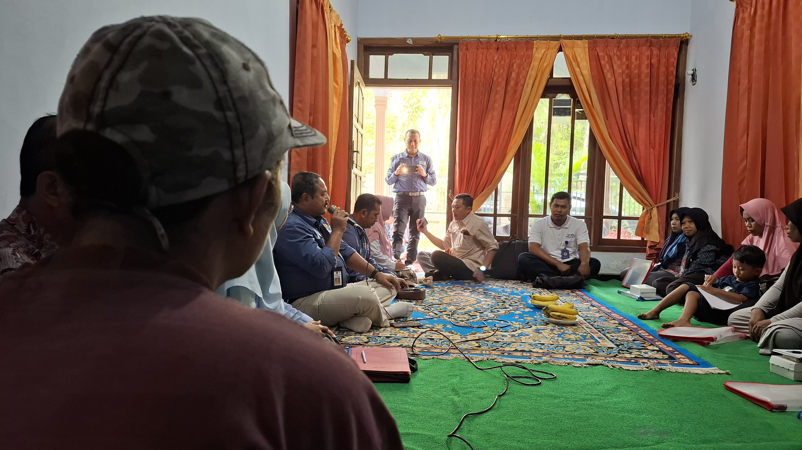
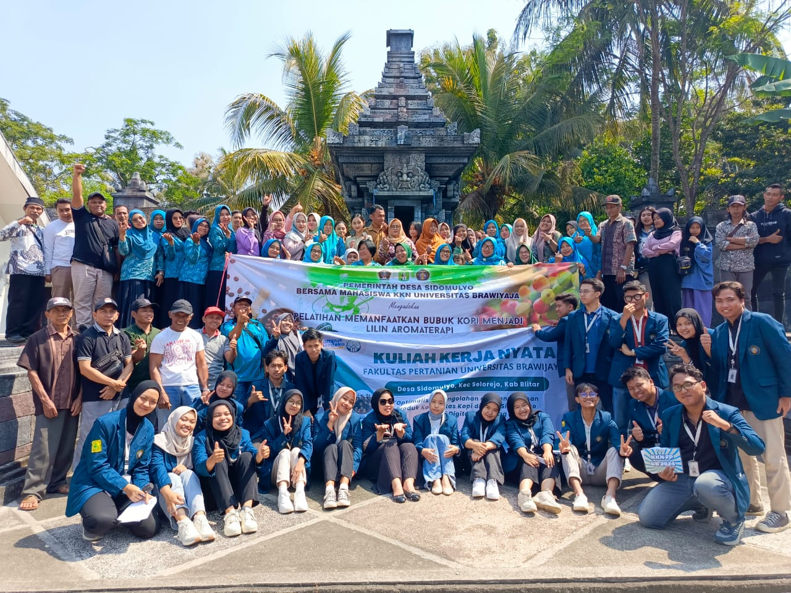
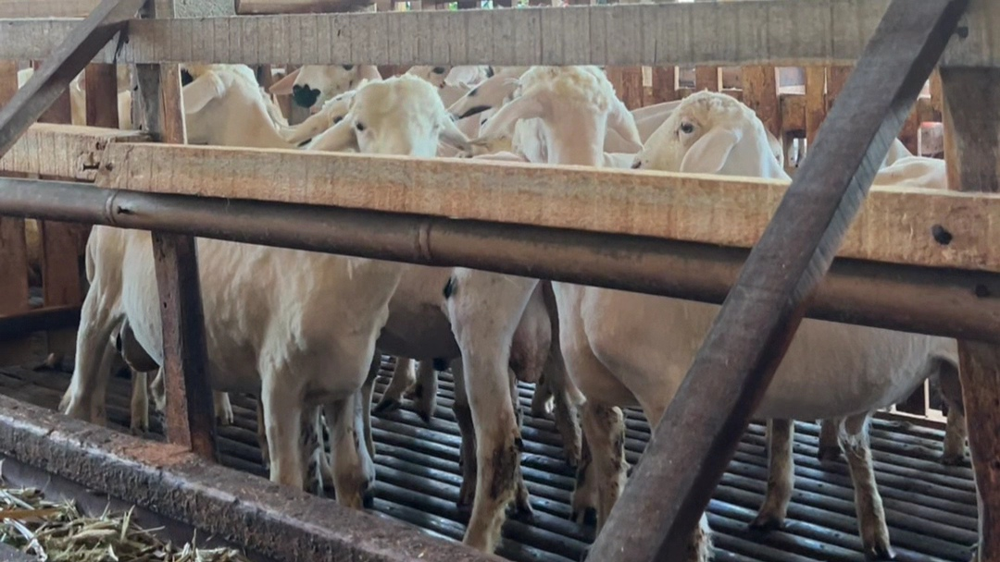
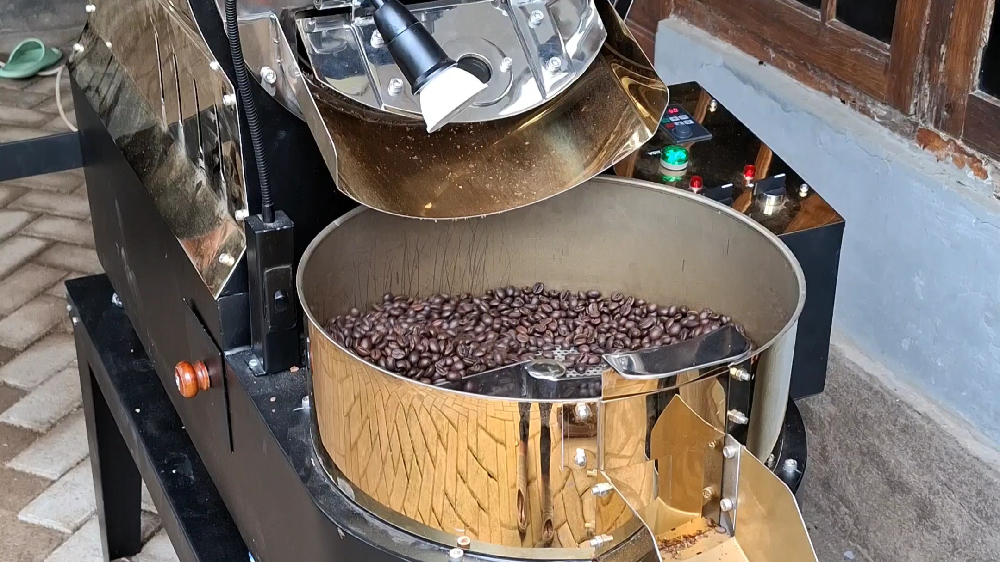
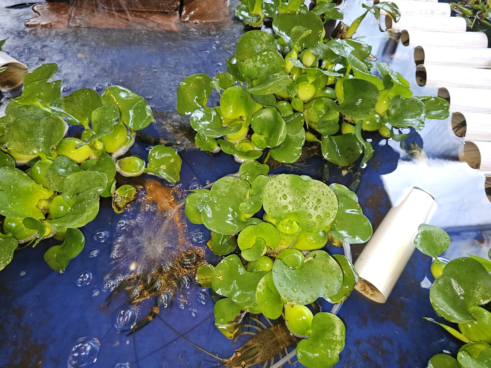
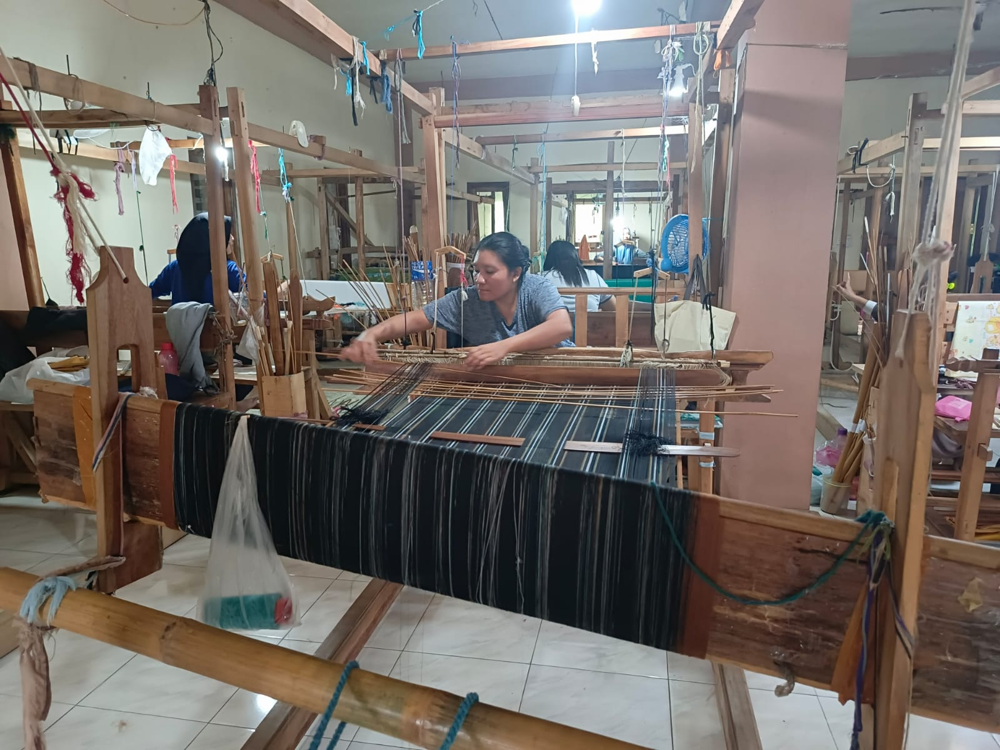

Pada tahun 2023 jumlah penduduk Desa Sidomulyo berjumlah 5893 jiwa dengan penduduk laki-laki 2919 jiwa dan perempuan berjumlah 2974 jiwa. Sedangkan pada tahun 2024 jumlah penduduk Desa Sidomulyo berjumlah 5646 jiwa dengan penduduk laki-laki sebanyak 2823 jiwa dan perempuan 2823 jiwa.
About Us
Desa Sidomulyo awalnya merupakan perkebunan karet C.O Jarangan seluas 1007 Ha yang disebut Perkebunan Karet Ploncing, dibagi menjadi tiga abdelling: Ploncing, Sungurejo, dan Kajepit, masing-masing dipimpin oleh tuan-tuan Belanda. Pada masa penjajahan Jepang (1941-1945), pimpinan perkebunan digantikan oleh orang-orang pribumi. Setelah Jepang kalah pada tahun 1945, pabrik peninggalan Belanda dan Jepang dihancurkan dan tanah perkebunan diubah menjadi lahan pertanian oleh warga sekitar. Pada tahun 1948, diadakan pemilihan kepala desa yang pertama dan terpilih Bapak Atmo Diharjo sebagai kepala desa. Setelah pemilihan, dilakukan musyawarah membentuk desa darurat dengan dusun-dusun:
1. Ploncing menjadi Dusun Sidomulyo
2. Thethelan menjadi Dusun Sidorejo
3. Sungurejo menjadi Dusun Gunungsari
4. Kajepit menjadi Dusun Sumberbendo
Pada tahun 1950, dilakukan pengukuran tanah dan pamong desa mendapatkan tanah bengkok sebagai imbalan kerja. Pemerintah darurat desa terus mengusulkan agar Sidomulyo menjadi desa resmi hingga pada 21 Januari 1961, Desa Sidomulyo diakui secara sah oleh pemerintah.

Geografis
Secara geografis Desa Sidomulyo terletak pada posisi 7⁰21'-7’31' Lintang Selatan dan 110⁰10'-111’40' Bujur Timur.
Secara Administatif
Secara administatif, Desa Sidomulyo terletak di wilayah Kecamatan Selorejo Kabupaten Blitar dengan dibatasi oleh desa tetangga. Di sebelah Utara berbatasan dengan Desa Ampelgading, di sebelah Barat dengan Desa Bumirejo, di sisi Selatan dengan Desa Boro sedangkan di sisi timur dengan Desa Jambuwer Kab. Malang.
Jarak Tempuh
Jarak tempuh Desa Sidomulyo ke ibu kota kecamatan (Kec. Selorejo) adalah 7 km, yang dapat ditempuh dengan waktu sekitar 10 menit dengan kendaraan bermotor. Sedangkan jarak tempuh ke ibu kota kabupaten adalah 60 km, yang dapat ditermpuh dengan waktu sekitar 1 jam.








SIDOMULYO GEMILANG
"Gemah Ripah Iman Cemerlang"
Potensi Daerah
Budidaya Ikan Channa
Desa Sidomulyo memiliki potensi dalam budidaya ikan Channa. Ikan ini memiliki nilai ekonomi tinggi dan permintaan pasar yang tinggi. Dengan dukungan pemerintah dan pelatihan, masyarakat dapat meningkatkan produksi dan kualitas. Budidaya ikan Channa dapat menciptakan lapangan kerja baru dan meningkatkan pendapatan masyarakat.

Budidaya Lobster
Selain dikenal sebagai penghasil kopi ploncing dan peternak kambing, Desa Sidomulyo juga memiliki potensi sebagai budidaya lobster. Dengan kondisi iklim yang sesuai, Desa Sidomulyo menjadi salah satu daerah penghasil lobster. Penerapan teknologi dan pelatihan budidaya lobster yang tepat dapat mendukung pertumbuhan dan perkembangan lobster yang baik.

Kerajinan Tenun
Desa Sidomulyo menawarkan pesona tenun yang luar biasa, dimana para pengrajin terampil menciptakan motif sesuai permintaan pelanggan, menjadikan setiap produk sebagai karya seni yang istimewa. Keindahan alam dan kerajinan tangan yang berkualitas menjadikan desa ini sebagai tempat yang kaya akan tradisi dan inovasi.Data Populasi
Visi Misi
Visi
“MENCIPTAKAN TATA KELOLA PEMERINTAH YANG JUJUR ADIL TRANSPARAN AMAN DAN TANGGUNG JAWAB”
Misi
1. Menyelenggarakan pemerintah yang bersih bebas dari korupsi dan bentuk-bentuk penyelewengan lainnya.
2. Menyelenggarakan urusan pemerintahan desa secara terbuka dan bertanggung jawab sesuai dengan peraturan perundang-undangan.
3. Menyelenggarakan pembangunan yang berpihak pada kepentingan masyarakat dengan prinsip keadilan pemerataan dan berkelanjutan.
4. Meningkatkan SDM dan kualitas hidup masyarakat desa.
5. Menciptakan kondisi masyarakat desa yang tertib dan aman.
Contact Us
If you want to know more about our village or if you have any questions, feel free to contact us through the information provided below.